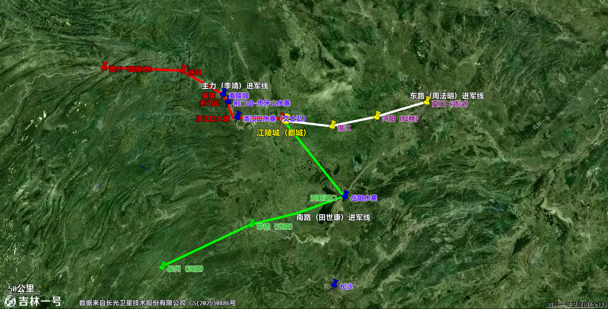

621年（武德四年），这是李渊坐上龙椅的第四个年头，他五十六岁。北方基本平定，南方还有一个强大的割据势力南梁，皇帝叫萧铣，占着荆州、岳州、潭州、桂州地盘。
可就这么个地盘最大的割据势力，从唐军出兵到萧铣出降，李靖只用了两个月。萧铣到死都没想通，自己号称四十万的大军，怎么就败给了一支趁秋汛顺流而下的水军。
一、战前背景
萧铣是南朝梁宣帝萧詧的曾孙。隋末天下大乱，他借着梁朝皇室的身份在江陵一带起兵，公元618年正式称帝，国号还是梁。控制着西起三峡，南到岭南，东抵九江，北拒汉水的广大区域，实力在南方诸割势力中排第一。
但是萧铣这个人疑心太重，他怕手下大将拥兵自重，干脆把兵权一把收回归自己直管，平时让士兵脱了铠甲回去种地，遇到战事才临时征召。
这一招叫偃武修文，天下群雄割据，打的乱成一锅粥了，你不想着锐意进取，反而消极割据，也不好好训练士兵，让40万大军回家种地去了。这迷之操作也是亘古未有吧。
李渊那边，618年称帝后几年里先后收拾了薛仁杲、刘武周，又在虎牢关生擒窦建德、迫降王世充。基本平定了北方地区，下一个目标顺理成章就是长江中游的萧铣。
公元619年，李渊任命堂侄李孝恭为夔州总管，在巴蜀练水军，筹备南征。李靖当时在李孝恭帐下当长史，负责真正的战略谋划。
（毕竟北方的唐军主力交给自己亲儿子李世民很放心，南方的主力也是，一把手得是李唐宗室，可以安排大将辅佐，但是很难让外人统帅一支军队，万一不听话怎么办，这就是帝王的制衡之术。）
二、双方作战序列与兵力部署

1、主攻方向：李孝恭、李靖率十二总管水军，自夔州（白帝城）顺长江东下直扑江陵（如地图，红色进军路线）。
2、南线军：田世康出辰州道（今湖南沅陵），从南面侧击萧铣后方。
3、东线军：周法明出夏口道（今武汉），自东面进逼江陵。
萧铣军部署情况：
1、文士弘率精兵数万屯清江（今湖北恩施清江口），正面堵唐军下水路。
2、萧铣自领主力守江陵，但是主力部队散落在南方各地务农，城防力量空虚。
3、岭南、交趾援兵待命，闻警才临时集结，远水救不了近火。
三、作战经过
第一阶段：秋汛突袭，破荆门、清江口大捷
李孝恭率领水师顺江而下，萧铣果然没有任何防备，攻陷了荆门、宜都二镇，大军挺进至夷陵。
萧铣的将领文士弘带领数万精兵赶来救援，在清江口列阵。李孝恭率军文士弘在清江口大战，大败南梁军队，杀死、溺死敌军上万，缴获三百余艘战舰，然后唐军乘胜追击，一直追击至百里洲。
文士弘收整残兵继续作战，唐军又将他打败，进入北江。
萧铣的江州总管盖彦举献出五州投降。
在这个阶段唐军可以说是势如破竹，李孝恭越打越自信有点飘了。
第二阶段：李孝恭打败仗
唐军达到了江陵城北的百里洲，李孝恭想立刻攻打敌军，李靖拦住他说：
“文士弘刚打了败仗跑到这里，他们并没有提前制订作战方案，势头难以持久，不如我军暂时在南岸驻扎，缓一日再发动攻击，他们一定会分散兵力，一部分留下来抵御我军，一部分回江陵城守卫。兵力一旦分散势力势必减弱，我军趁着敌军松懈发动袭击，定然获胜。现在要是马上攻打，敌方会拼死作战，楚兵又剽悍骁勇，难以抵抗。”
但是李孝恭已经打胜仗打的得意忘形了，就没有听李靖的建议，留李靖守大营，自己带兵冲上去，果不其然被打崩，逃到了长江南岸。
第二阶段：李靖翻盘，弃船惑敌
一般情况下，主力战败，基本就没戏了，但是得亏李靖不是普通的幕僚长史，他在营垒上远远看着，见文士弘的兵打败唐军后一哄而上，争抢唐军丢下的辎重财物，阵型早乱成一锅粥。
李靖抓住这转瞬即逝的战机，亲率营中剩下的部队兵反冲出去，大破文士弘，然后一口气冲到江陵城下，进入江陵外城，继续进攻水城，攻克并收缴大量战船。这时候已经包围了江陵城。
接下来要讲述真正的重头戏了。
李靖干了一件让后人拍案的事。他把这三百多艘缴获的敌船，全部解开缆绳，一艘艘推入江中，任其顺流漂下。
手下将领没有能看懂他的操作的。
众将表示很疑惑：“战胜敌人收缴战利品，应该为我所用，怎么能抛弃用来资助敌人呢？”
李靖说：“萧铣的地盘，南至五岭以南，东抵洞庭湖。我们孤军挺进，要是攻城不克的话，敌人的援军从四面八方赶来，我军就会腹背受敌，难以进退，就算有船舰又有什么用呢？现在抛弃船舰，让它们壅堵江面顺流而下，敌方援军看到的话，一定会认为江陵城已经被攻下，不敢贸然进军，要前来打探情况，他们行动延迟十天半月，我军就肯定能够攻取。”
历史上在李靖之前我是没印象还有人这么做过。
从这里我们可以看出来李靖对于敌人的心理把握透彻了：
①他认为长江涨水敌人以为我们不敢出兵，那我们就出兵。
②敌人打了败仗我们不能追得太紧，否则困兽犹斗，我们可能要吃败仗。李孝恭不听，果然败了。
③他把战船扔到长江里顺江而下，等敌人的援军从长江下游看到战船的时候已经会以为上游战争已经结束，他们已经失败了。扰乱敌人军心。
三个心理战全部猜中。
果然不出所料，萧铣从岭南、交趾调来的救兵正日夜赶路，行到半途，忽然看见江面上漂满空船，船上无人，以为江陵已经破了、主帅被擒，顿时疑神疑鬼的不敢前进。
第三阶段：围江陵，萧铣出降
疑兵一布，江陵成了孤城。唐军包围了江陵城，最后萧铣率领文武百官开门出降。
多说一句，对于胜果的处理更能见到李靖的帅才。
李孝恭入城占据江陵，各位将领说：“梁的将帅抵御官军战死的，罪行深重，请求没收他们的家产，用来犒赏将士。”
李靖说：“王者之师，应该以看重仁义为先。他们为了自己的君主奋战至死，是忠臣，如何能够和叛逆罪一样没收其家呢？”
因此城中秩序井然，秋毫无犯。南方各州县闻讯，都望风依附。
萧铣投降几天之后，他的十余万援军抵达江陵，得知江陵失守，全都放下武器归降。
萧铣被押送长安，李渊当面数他的罪，萧铣脖子一梗回了一句，隋失其鹿，天下共逐之，铣本无大过，何罪之有。李渊气得够呛，下令斩了。
弃船惑敌是整场仗的神来之笔。对比韩信四面楚歌瓦解楚军，核心都是一个疑兵之计，用心理战瓦解了敌军。
李靖其实和韩信一样，我们会发现他俩的战争充满着艺术性，克制杀戮，不像白起、吴起，充满着血腥味。他俩总是用最小的代价获取最大的战果。但是从不会屠城，烧杀抢掠。在那个年代，他俩具有着相同的人本主义思想。